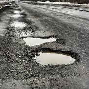

String of pearls
Fractal pothole

Salt and Sand

I designed this website to document some of my favorite potholes around Boston. Below you can see my three favorite potholes. Click "Map" in the navigation bar. To add your own your own favorite potholes. Click "Add new."